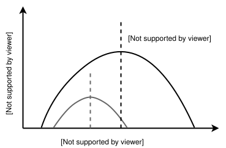
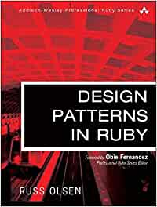
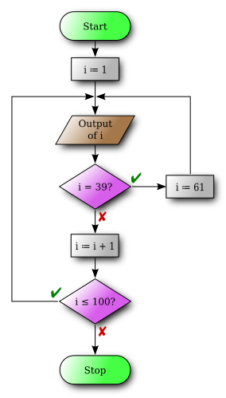
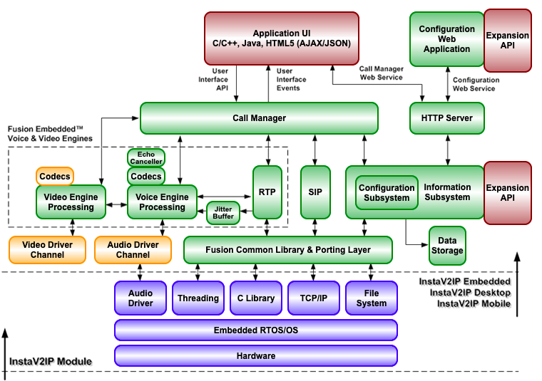
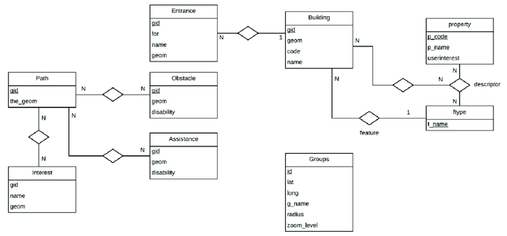
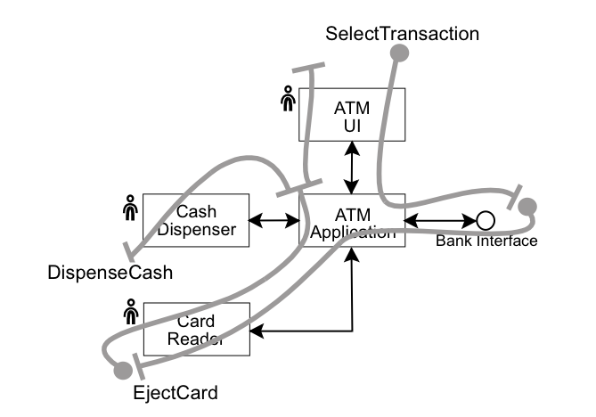

Software Design
in 50 Minutes
2024-09-24
Why Should You Listen to Me?
- I’ve built a lot of complicated software…
- …and have been lucky enough to hang out with some very smart people
The Most Important Thing
Computer scientists aren’t taught how to design software
- The most design-intensive “engineering” discipline there is
- But courses where students analyze and critique others’ programs are rare
- So no, you haven’t missed something obvious
1. Design after the fact
- The most important thing is to look as though you designed things (Parnas1986)
- So that the next person can understand it
- Many designers explain architecture by recapitulating history (Brown2011,Brown2012)
- Challenge and response
- Can only understand why it does what it does by understanding the problem it was designed to solve
1. Design after the fact
- Refactoring is the process of reorganizing or rewriting
code without changing behavior
- By which we mean “high-level behavior” because of course if you look closely enough…
- Fowler2018 describes common refactoring moves for code
- These do to code what tidying steps in a data pipeline do to data (Wickham2017): move it toward well-understood forms (Kerievsky2004)
2. Design for cognitive capacity
- Short-term memory vs. long-term memory
- You can manage 7±2 things at a time (Miller1956)
- So design software to keep cognitive load manageable
2. Design for cognitive capacity
- Constants are easier to remember than varying values…
- …unless those values vary in predictable ways
- Keep number of parameters or variables in (mental) scope at any time below this threshold
- Pipes with strict left-to-right reading order are easier to understand than nested function calls
- Build frameworks that encourage this
Aside
- Some people say that if you need to comment your code you should have written clearer code
- That is expert blind spot at work
- Newcomers need help building a mental model of the code and problem
- And everyone needs the “why” that code alone doesn’t capture
3. Design in coherent levels
- Functions should be short, shallow, and single-purpose
- Of course, no one would argue the opposite…
- If I read a function aloud, are all the steps at the same conceptual level?
def main():
config = buildConfig(sys.argv)
state = initState(config)
while (config.currentTime < config.haltTime):
updateState(config, state)
report(config, state)3. Design in coherent levels
- Functions should be short, shallow, and single-purpose
- Of course, no one would argue the opposite…
- If I read a function aloud, are all the steps at the same conceptual level?
def main():
config = buildConfig(sys.argv)
state = initState(config)
while (config.currentTime < config.haltTime): ##
updateState(config, state)
report(config, state)3. Design in coherent levels
- Functions should be short, shallow, and single-purpose
- Of course, no one would argue the opposite…
- If I read a function aloud, are all the steps at the same conceptual level?
def main():
config = buildConfig(sys.argv)
state = initState(config)
while stillEvolving(config): ##
updateState(config, state)
report(config, state)Levels
- Schon1984 and others have found that experts jump between levels looking for concrete refutations of plans as soon as possible
- Depth-first design is therefore a good strategy if you
write the hard parts first
- Which most of us avoid
4. Design for evolution
- Software changes over time because the problem changes and
because we learn more
- The tool shapes the hand
- A good design makes independent evolution of parts easier
- A fix here shouldn’t require changes there
- Realistically, should only require a small number of changes in limited, predictable places
- The switch to
stillEvolvingin the previous slide insulatesmainfrom lower-level changes
4. Design for evolution
- Key ideas are information hiding and loose coupling
- Which manifest as interface vs. implementation
- Many of the more advanced features of programming languages exist to check this
- Examples
- Deriving classes
- Polymorphic functions
- Explicit interfaces or traits
4. Design for evolution
- Design by contract (Meyer1994) extends this
idea through time
- Pre-conditions have to be true in order for the function to run
- Post-conditions are what the function guarantees will be true when it completes
- Can be used to define and verify tests
4. Design for evolution
- But wait, there’s more
- Pre-conditions can only be relaxed
- I.e., the function can take input the earlier implementation wouldn’t
- Post-conditions can only be strengthened
- I.e., the function can only produce a subset of the earlier implementation’s output
5. Group related information
- Brains use chunks to expand effective size of short-term memory
- So combine things into structures
# Bad
def enclose(x0, y0, z0, x1, y1, z1, nearness):
…# Good
def enclose(p0, p1, nearness):
…6. Use common patterns
- Experts have design patterns in mind when building code
- Learning them makes you a better programmer (Tichy2010)
- But also makes your code seem more familiar to others
- Examples include:
- “Most valuable” variable (Byckling2005)
- Nested loops over 2D array
- Filter-group-summarize
6. Use common patterns
- A near miss is worse than no pattern at all
for (i=0; i<a.width; i++) {
for (j=0; i<a.height; j++) {
a[i][j] = cos(abs(a[i][j]) - lemaitre(b_norm, a[j][i]))
}
}6. Use common patterns
- A near miss is worse than no pattern at all
for (i=0; i<a.width; i++) {
for (j=0; i<a.height; j++) { ##
a[i][j] = cos(abs(a[i][j]) - lemaitre(b_norm, a[j][i]))
}
}- The eye (literally) doesn’t see it
6. Use common patterns
- Maximize “what’s unique to this operation / boilerplate”
a = cos(abs(a) - lemaitre(b_norm, a.transpose()))- Build frameworks that encourage this
6. Use common patterns
- Balance of abstraction and comprehension depends on how much people know

6. Use common patterns
- Patterns can be taught (but only by example)

7. Design for delivery
- Development operations (DevOps) has become a buzzword
- Like “data science” or “computational thinking”, the term is popular because people can use it to mean whatever they want
- But the core idea is a good one
(Kim2016,Forsgren2018)
- The code you ship is surrounded and supported by software (and practices) that deliver that code
- Investment in automation pays off many times over
- If you design things so that they can be automated
7. Design for delivery
- Use whatever build tool your language expects
piporcondafor Pythondevtoolsfor R- Many conflicting options for JavaScript
- Organize code and files the way your build system expects
7. Design for delivery
- Use a logging library
- A volume control is really helpful in production…
- …particularly if messages are collated…
- …but only if the messages are helpful
- And follow the rest of Taschuk2017
8. Design for testability
- Legacy code: we’re afraid to modify it because things will break unexpectedly (Feathers2004)
- Comprehensive tests make us less afraid
- But we need testable pieces in order to create tests economically
- Brings us back to pre-and-post rather than how
8. Design for testability
- How easy is it to create a fixture?
- How easy is it to invoke just the behavior we want?
- How easy is it to check the result?
- How easy is it to figure out what “right” is?
- How easy is it to delete the feature?
Test-Driven Development
- Test-driven development (TDD) is the practice of writing the tests before writing the code
- Multiple studies have shown that it doesn’t actually improve productivity (Fucci2016)
- But alternating rapidly between testing and coding seems to
9. Design as if code was data
- The insight on which modern computing is based
- Programs are just text files
- Style-checking tools
- Specially-formatted comments as embedded documentation
- But wait…
9. Design as if code was data
Code in memory is just another data structure
- Functions as arguments
- Functions in data structures
- Dynamic loading
- Interface vs. implementation
- Lazy evaluation in R
- Decorators in Python
9. Design as if code was data
- Count the number of values that pass a test
def count_positive(array):
number = 0
for value in array:
if value >= 0: ##
number = number + 1
return number9. Design as if code was data
- Count the number of values that pass a test
def count_interesting(array, test):
number = 0
for value in array:
if test(value): ##
number = number + 1
return number
def is_positive(value): ##
return value >= 0 ##
count_interesting(array, is_positive) ##The Audience Matters
- But see the discussion earlier of comprehension curves
- What is powerful in the hands of experts is spooky action-at-a-distance for novices
10. Design graphically
- Very few programmers use UML the “right” way (Petre2013)
- But almost all draw pictures to help them design (Cherubini2007)
- Blueprints versus brainstorming
10. Design graphically
- Flowcharts are unfairly maligned (Scanlan1989)

10. Design graphically
- Architecture diagrams: probably the most widely used (probably because of their informality)

10. Design graphically
- Entity-relationship diagrams: widely used because they are actually helpful

10. Design graphically
- Use case maps: actions overlaid on architecture

11. Design with everyone in mind
- Fairness, privacy, and security cannot be sprinkled on afterward
- Principle of Least Privilege: what is the least information this part of the software absolutely needs to do its job?
- But that’s not all
- If users have to reset passwords frequently, they will choose insecure passwords (Smalls2021)
- Systems that email attachments train people to be vulnerable to phishing attacks
- Most social media isn’t designed with abusive ex-partners in mind…
11. Design with everyone in mind
- Accessibility can’t be sprinkled on afterward either
- Close your eyes and try to navigate your department’s website
- Or tape popsicle sticks to your fingers to simulate severe arthritis
- More important as the population ages (Johnson2017)
12. Design for contribution
- Diversity improves outcomes in fields from business to healthcare (Gompers2018,Gomez2019)
- But you should do it because it’s the right thing to do
12. Design for contribution
- Licensing is a design issue
- You cannot use components whose licenses are incompatible with yours
- Plugin architectures make small additions more approachable
- Discoverable designs do too (Sholler2019)
Conclusion
- This is not art
- But it is beautiful
- I believe we can make bicycles too
Thank You

start where you are · use what you have · help who you can